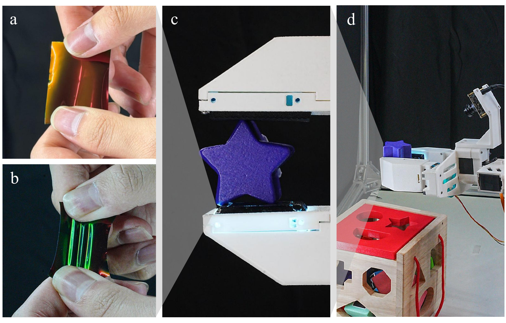
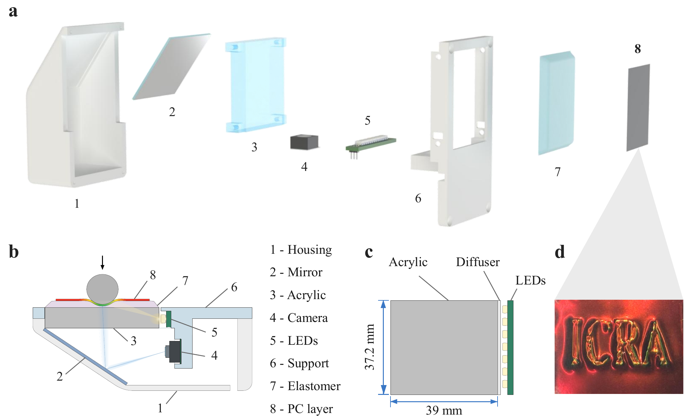
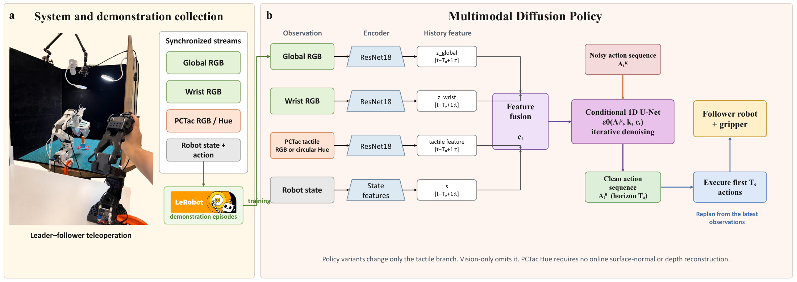
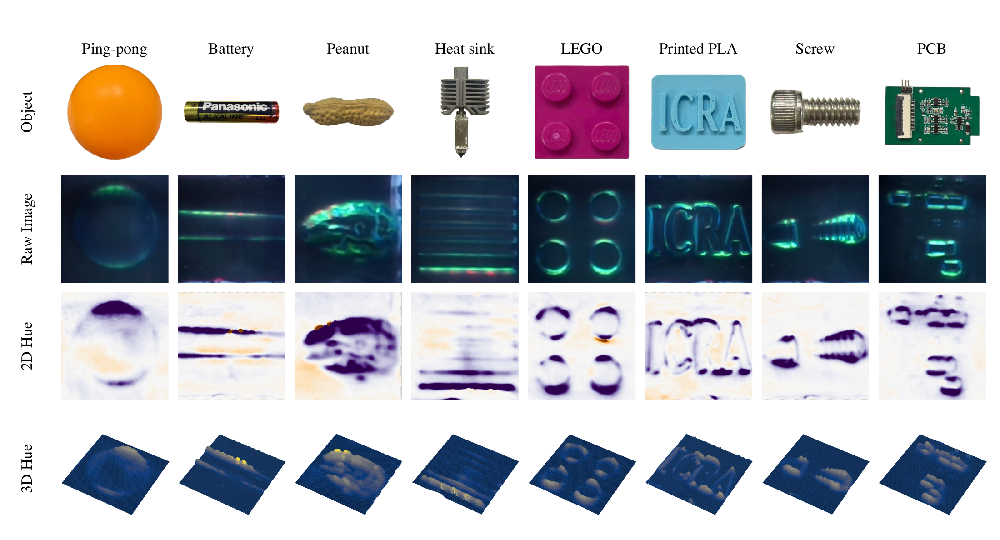
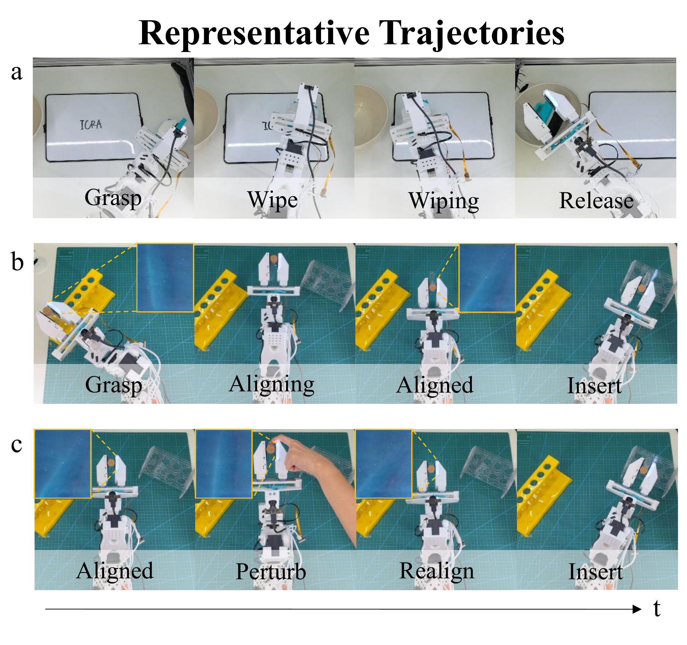
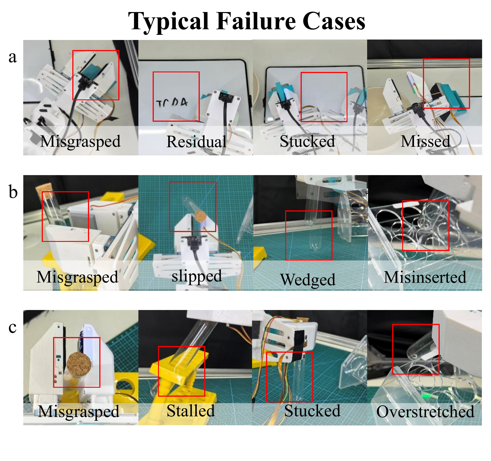

PCTac: Direct Structural-Color Tactile Feedback for Dexterous Manipulation
A photonic-crystal fingertip brings contact-induced color changes directly into robot learning.
Project photographs, manuscript figures and reported task counts. No stock footage or synthetic performance results.

The sensing system
Contact becomes color.
Color becomes an observation.
PCTac observes a continuous structural-color field at one instrumented fingertip, opposite a passive contact surface. Reference-relative circular Hue represents contact-induced appearance changes without interpreting them as calibrated force or pressure.
The figures below document the current manuscript’s hardware and robot-learning system. Robot task results describe the evaluated complete systems; they do not, by themselves, isolate sensor superiority or establish faster slip response.
Inside the fingertip
Original PDF ↗
From demonstrations to closed-loop actions
Original PDF ↗
Project imagery
Touch, manipulation and recovery.
Eight objects. One structural-color representation.
Original PDF ↗
Representative successful trajectories
Original PDF ↗
Failures remain part of the record
Original PDF ↗
Manuscript-reported results
Three contact-rich tasks.
Successes / 30 trials per task, transcribed from Table I of the current manuscript. Missing entries are not estimated or treated as zero.
| Policy / tactile input | Whiteboard Wiping | Test-Tube Insertion | Perturbed Test-Tube Insertion | Overall |
|---|---|---|---|---|
| Vision-only | 19/30 (63.3%) | 9/30 (30.0%) | 1/30 (3.3%) | 29/90 (32.2%) |
| Marker-based Wedge RGB | 23/30 (76.7%) | 21/30 (70.0%) | 13/30 (43.3%) | 57/90 (63.3%) |
| Marker-based Wedge depth | 20/30 (66.7%) | 18/30 (60.0%) | 15/30 (50.0%) | 53/90 (58.9%) |
| Marker-based Wedge normal | 21/30 (70.0%) | 20/30 (66.7%) | 14/30 (46.7%) | 55/90 (61.1%) |
| Marker-based Wedge marker | 22/30 (73.3%) | Not reported | Not reported | Incomplete |
| PCTac RGB | 22/30 (73.3%) | 25/30 (83.3%) | 13/30 (43.3%) | 60/90 (66.7%) |
| PCTac Hue | 24/30 (80.0%) | 28/30 (93.3%) | 16/30 (53.3%) | 68/90 (75.6%) |
How to read these numbers
PCTac Hue reports 24/30, 28/30 and 16/30 successes across the three tasks. These descriptive counts are not a significance test. Episode-level records, training-seed variation and confidence intervals were not independently re-audited for this website update.
Marker-based Wedge is a research baseline, not a commercial product claim. Its marker-input insertion results remain missing in the source. No force-calibration, inference-latency or slip-response advantage is inferred from this table.
Figures and reported data.
Download the table and provenance manifest. Every figure above links to a PDF copy with identity metadata removed; figure content is unchanged. Anonymous supplementary website for review.
Raw episodes, model weights, local configurations and the full manuscript are not included. Placeholder and superseded duplicate figures are excluded from the gallery. No verified standalone project video is bundled in this release.